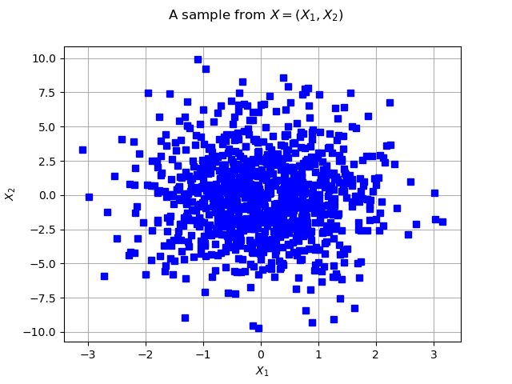
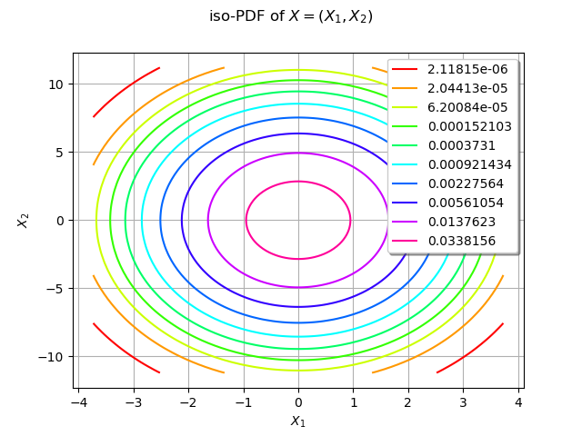
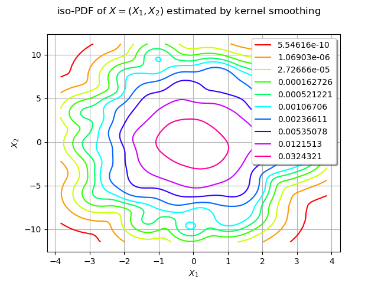
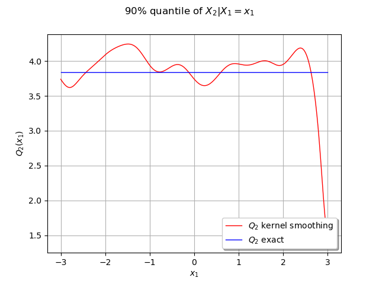
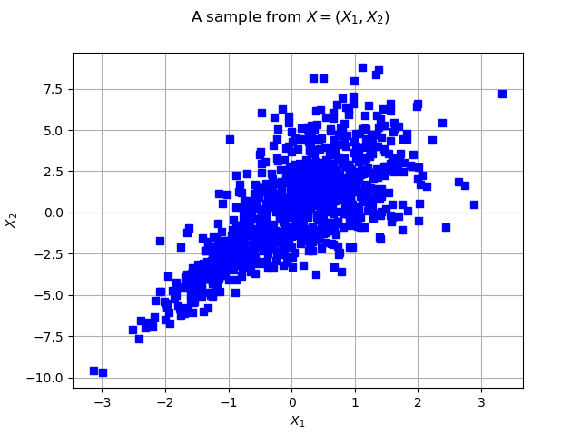
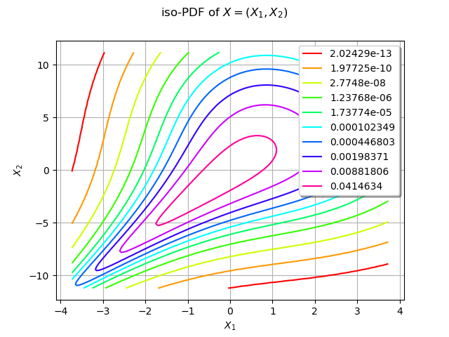
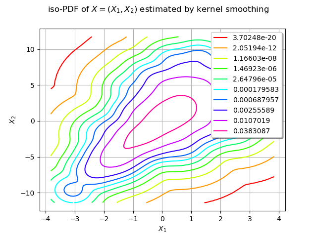
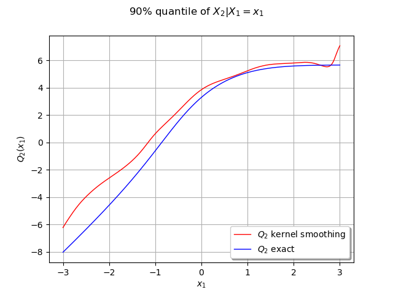

Note
Go to the end to download the full example code
Estimate a conditional quantile¶
# sphinx_gallery_thumbnail_number = 8
From a multivariate data sample, we estimate a distribution with kernel smoothing.
Here we present a bivariate distribution  .
We use the computeConditionalQuantile method to estimate the 90% quantile
.
We use the computeConditionalQuantile method to estimate the 90% quantile  of the conditional variable
of the conditional variable  :
:
![Q_2 : x_1 \mapsto q_{0.9}(X_2|X_1=x_1)]()
We then draw the curve  .
We first start with independent normals then we consider dependent marginals with a Clayton copula.
.
We first start with independent normals then we consider dependent marginals with a Clayton copula.
import openturns as ot
import openturns.viewer as viewer
from matplotlib import pylab as plt
import numpy as np
ot.Log.Show(ot.Log.NONE)
Set the random generator seed
ot.RandomGenerator.SetSeed(0)
Defining the marginals¶
We consider two independent normal marginals :
X1 = ot.Normal(0.0, 1.0)
X2 = ot.Normal(0.0, 3.0)
Independent marginals¶
distX = ot.ComposedDistribution([X1, X2])
sample = distX.getSample(1000)
Let’s see the data
graph = ot.Graph("2D-Normal sample", "x1", "x2", True, "")
cloud = ot.Cloud(sample, "blue", "fsquare", "My Cloud")
graph.add(cloud)
graph.setXTitle("$X_1$")
graph.setYTitle("$X_2$")
graph.setTitle("A sample from $X=(X_1, X_2)$")
view = viewer.View(graph)

We draw the isolines of the PDF of  :
:
graph = distX.drawPDF()
graph.setXTitle("$X_1$")
graph.setYTitle("$X_2$")
graph.setTitle("iso-PDF of $X=(X_1, X_2)$")
view = viewer.View(graph)

We estimate the density with kernel smoothing :
kernel = ot.KernelSmoothing()
estimated = kernel.build(sample)
We draw the isolines of the estimated PDF of :
graph = estimated.drawPDF()
graph.setXTitle("$X_1$")
graph.setYTitle("$X_2$")
graph.setTitle("iso-PDF of $X=(X_1, X_2)$ estimated by kernel smoothing")
view = viewer.View(graph)

We can compute the conditional quantile of with the computeConditionalQuantile method and draw it after.
We first create N observation points in ![[-3.0, 3.0]]() :
:
N = 301
xobs = np.linspace(-3.0, 3.0, N)
sampleObs = ot.Sample([[xi] for xi in xobs])
We create curves of the exact and approximated quantile
x = [xi for xi in xobs]
yapp = [estimated.computeConditionalQuantile(0.9, sampleObs[i]) for i in range(N)]
yex = [distX.computeConditionalQuantile(0.9, sampleObs[i]) for i in range(N)]
cxy_app = ot.Curve(x, yapp)
cxy_ex = ot.Curve(x, yex)
graph = ot.Graph("90% quantile of $X_2 | X_1=x_1$", "$x_1$", "$Q_2(x_1)$", True, "")
graph.add(cxy_app)
graph.add(cxy_ex)
graph.setLegends(["$Q_2$ kernel smoothing", "$Q_2$ exact"])
graph.setLegendPosition("bottomright")
graph.setColors(["red", "blue"])
view = viewer.View(graph)

In this case the  quantile is constant because of the independence of the marginals.
quantile is constant because of the independence of the marginals.
Dependence through a Clayton copula¶
We now define a Clayton copula to model the dependence between our marginals. The Clayton copula is a bivariate asymmmetric Archimedean copula, exhibiting greater dependence in the negative tail than in the positive.
copula = ot.ClaytonCopula(2.5)
distX = ot.ComposedDistribution([X1, X2], copula)
We generate a sample from the distribution :
sample = distX.getSample(1000)
Let’s see the data
graph = ot.Graph("2D-Normal sample", "x1", "x2", True, "")
cloud = ot.Cloud(sample, "blue", "fsquare", "My Cloud")
graph.add(cloud)
graph.setXTitle("$X_1$")
graph.setYTitle("$X_2$")
graph.setTitle("A sample from $X=(X_1, X_2)$")
view = viewer.View(graph)

We draw the isolines of the PDF of :
graph = distX.drawPDF()
graph.setXTitle("$X_1$")
graph.setYTitle("$X_2$")
graph.setTitle("iso-PDF of $X=(X_1, X_2)$")
view = viewer.View(graph)

We estimate the density with kernel smoothing :
kernel = ot.KernelSmoothing()
estimated = kernel.build(sample)
We draw the isolines of the estimated PDF of :
graph = estimated.drawPDF()
graph.setXTitle("$X_1$")
graph.setYTitle("$X_2$")
graph.setTitle("iso-PDF of $X=(X_1, X_2)$ estimated by kernel smoothing")
view = viewer.View(graph)

We can compute the conditional quantile of  with the computeConditionalQuantile method and draw it after.
with the computeConditionalQuantile method and draw it after.
We first create N observation points in :
N = 301
xobs = np.linspace(-3.0, 3.0, N)
sampleObs = ot.Sample([[xi] for xi in xobs])
We create curves of the exact and approximated quantile
x = [xi for xi in xobs]
yapp = [estimated.computeConditionalQuantile(0.9, sampleObs[i]) for i in range(N)]
yex = [distX.computeConditionalQuantile(0.9, sampleObs[i]) for i in range(N)]
cxy_app = ot.Curve(x, yapp)
cxy_ex = ot.Curve(x, yex)
graph = ot.Graph("90% quantile of $X_2 | X_1=x_1$", "$x_1$", "$Q_2(x_1)$", True, "")
graph.add(cxy_app)
graph.add(cxy_ex)
graph.setLegends(["$Q_2$ kernel smoothing", "$Q_2$ exact"])
graph.setLegendPosition("bottomright")
graph.setColors(["red", "blue"])
view = viewer.View(graph)

Our estimated conditional quantile is a good approximate and should be better the more data we have. We can observe it by increasing the number of samples.
plt.show()